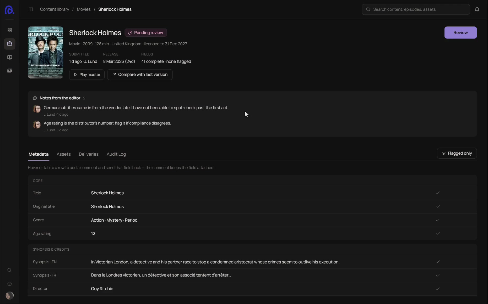

The same feature (Feature 01) in three layouts. Smaller title and lead in all three, and the long ruled list is gone. Each point gets a short head so the eye can skim, and the media carries more of the story.
1Notes on the screen Numbered pins on the screenshot, a short legend below
Feature 01
The publisher approves an item, or sends it back with reasons the editor can act on one by one. Each reason is pinned to its field.

Best when the screen is the proof. Hover a pin or a note to link them. On Backlot the pins would sit on the live prototype.
2Intro beside the points Text reads as one block, then the media gets the full width
Feature 01
The publisher approves an item, or sends it back with reasons the editor can act on one by one. Each reason is pinned to its field.
The calmest option and the cheapest to apply to all ten features. Points stay short enough to skim in two columns.
3Steps that move the screen Scroll the steps, the screen zooms to each one
Feature 01
The publisher approves an item, or sends it back with reasons the editor can act on one by one. Each reason is pinned to its field.
The most memorable, and the one that uses the most scroll. Worth it on two or three key features (rejection, readiness, upload), not all ten. Uses the same zoom for a prototype or a video.